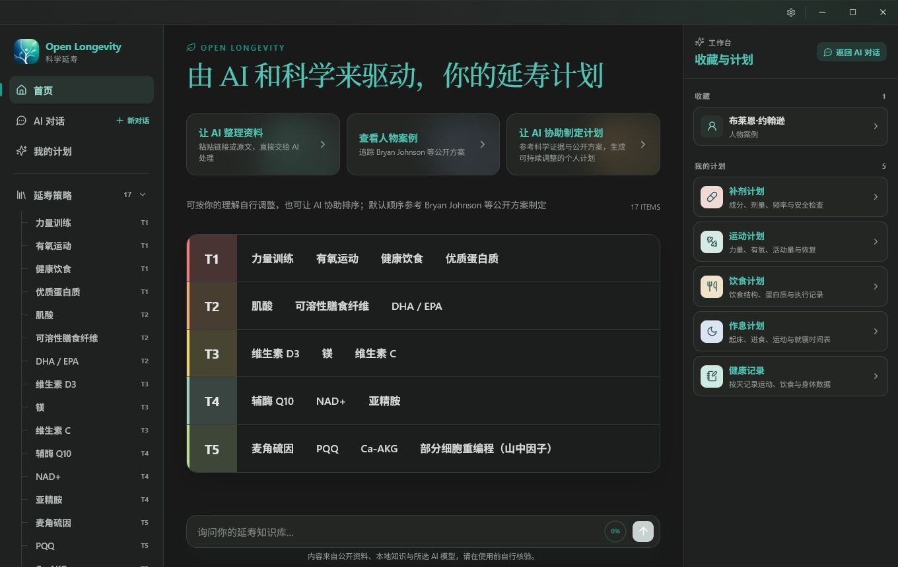
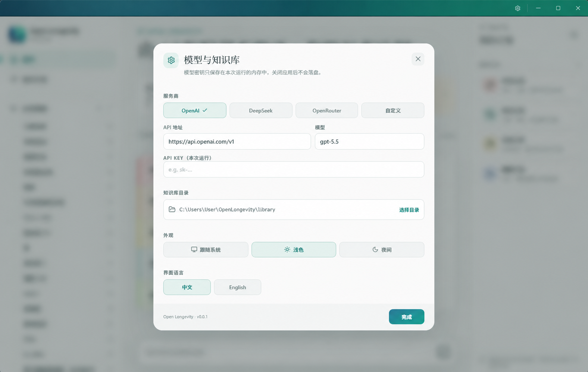

01OPEN KNOWLEDGE
开放知识
中英文出厂资料公开组织，让专业信息变得可读、可检索、可继续生长。
富豪花费百万美元借助科技延寿，而 Open Longevity 希望把生命之光同样带给普通家庭；以 Bryan Johnson 公开的延寿计划为蓝本，融入 AI 与科学依据，让普通人也能拥有富豪级的延寿策略。
macOS 首次需在「终端」 xattr -cr '/Applications/Open Longevity.app'
OPEN LONGEVITY / 开放宣言
昂贵的私人团队、封闭的数据和难以验证的建议，不该成为通往更长生命的门槛。Open Longevity 希望把知识、证据与工具打开，让每个人都能理解、检查并建立自己的延寿计划。
中英文出厂资料公开组织，让专业信息变得可读、可检索、可继续生长。
结论始终保留来源、证据边界与适用条件，欢迎追问，而不是要求盲信。
代码与数据结构可以被检查、改进和扩展；模型可替换，个人资料默认属于你。
三条生长路径
补剂、运动、饮食与人物案例，以普通人能读懂的方式组织；专业证据仍然随时可追溯。
把论文链接、摘要或临时想法直接交给 AI，提炼研究对象、结果、局限与来源，再由你决定是否保存。
围绕你的资料持续对话。它记得当前上下文，也清楚地区分个人方案、一般信息与尚未证实的推测。
一间属于你的研究室
左侧是知识地图，中间是阅读与证据，右侧是计划与收藏。无需打开开发工具，也无需把私人资料上传到陌生平台。

优先级，不是假装精确的分数
Open Longevity 默认参考公开方案与证据成熟度给出起始排序，但保留适用条件与不确定性。你可以按自己的理解调整，也可以让 AI 协助重排。
选择你的 AI
OpenAI、Anthropic，或任何兼容接口都可以接入。选择模型、API 地址与本地知识库后，AI 即可参与资料收录、证据理解和持续对话；密钥只保存在当前用户的本地配置中。

OPEN LONGEVITY · SCIENTIA VITAE